FPGA project · Verilog · Arty S7-50
A WWII Enigma, rebuilt in Verilog.
Started as a 2024 course project at VIT Chennai, and rebuilt since. Three rotors, a plugboard, a reflector and a lampboard, running on a Xilinx Spartan-7 FPGA. The design is checked in simulation against an independent model, and it has been tested on the real keyboard and lampboard.
Try the machine
This page runs the same algorithm as the Verilog. Tap the keys, or click anywhere on the page and type. The four presets match the board's sw[1:0] switches.
Settings
Path of the last letter
Press a key. The rotors step first, then the signal runs right to left, bounces off the reflector and returns left to right (dashed).
Show the vectors
What runs on the FPGA
The first prototype lit a lamp for every key. The rebuild adds the cipher itself and splits the design into small modules, each with its own testbench.
Keyboard
29 keys in a diode matrix, read through one CD74HC4067 multiplexer.
key_scanner
Scans 9 columns, waits for the multiplexer to settle, debounces over 3 scans and ignores two-key presses.
enigma_core
Steps the rotors, including the double-step, then runs the letter through plugboard, rotors and reflector. One shared rotor unit, 15 clocks per letter.
lamp_driver
Turns the letter into a 5-bit multiplexer code. The lamp stays lit while the key is held.
Lampboard
26 LEDs on two CD74HC4067 multiplexers.
from key_scannerstepping happens hereS_PLUG_IN1 clockS_R_FWD2 clocksS_M_FWD2 clocksS_L_FWD2 clocksS_REFLECT1 clockS_L_INV2 clocksS_M_INV2 clocksS_R_INV2 clocksS_PLUG_OUT1 clocklamp_driver15 clocks in totalControls on the Arty S7
sw[1:0] picks one of four machine presets. sw[2] is setup mode: type the start letters on the keyboard. btn[1..3] show the three rotor windows on the lampboard, so no display is needed.
Built for bring-up
Hold all three buttons for a lamp self-test that sweeps A to Z without the keyboard. A bring-up guide lists eleven bench stages with the expected lamps for each.
How I know it is right
Three separate implementations of the cipher agree with each other. The Verilog is only accepted when it matches the reference model on every check.
A reference model, tested against published Enigma results such as AAAAA → BDZGO and the double-step sequence ADU → ADV → AEW → BFX.
The FPGA design, simulated in Icarus Verilog against vectors the Python model generates.
The machine on this page. Its self-check runs the same kind of vectors in your browser.
| Check | What it covers | Result |
|---|---|---|
tb_enigma_core | Directed tests plus 262 machines from the model: all five rotors in every slot, both reflectors, 0 to 10 plug pairs, a 700-letter run | 10,759 checks |
tb_key_scanner | A model of the diode matrix: all 26 keys, hold, release, bounce, two keys at once | 166 checks |
tb_lamp_driver | Lamp codes written out independently of the generated table | 138 checks |
tb_enigma_top | Whole system: keyboard model to lamps, four presets, setup mode, window display, lamp self-test | 968 checks |
| Mutation check | 19 bugs injected into the Verilog, such as no double-step, a wrong notch, a lamp enable that is not inverted | 19 of 19 caught |
| pytest | Key matrix and lamp codes compared with the original prototype code that worked on the real keyboard, pin map compared with Digilent's file, generated files in sync, rules for synthesizable code | 65 passed |
All results are from simulation on a development PC. The mutation check exists to show the testbenches can fail, not only pass.
Inside the FPGA
After synthesis the design is a few hundred lookup tables (LUTs) and flip-flops wired together. Here is what those circuits do for one key press.
- Scan. A counter in
key_scannersteps the multiplexer column address. After a short settle time it samples the four row lines through synchronizers. A key counts only when the same single pattern shows in 3 scans in a row, and two keys at once are ignored. - Step. The key code is latched into the core. The right rotor position register adds 1 modulo 26. The middle one also steps when the right rotor is at its notch or the middle rotor is at its own notch (the double-step), and the left one steps when the middle is at its notch.
- Walk the signal. One 5-bit register,
sig, holds the letter. The state machine moves it through ten states: plugboard in, right, middle and left rotor forward, reflector, left, middle and right rotor back, plugboard out. - One rotor circuit, six uses. Each rotor stage takes two clocks. First,
siggets the rotor offset added (position minus ring setting, modulo 26). Then the wiring ROM is read and the offset is subtracted again. The state decides which rotor, position and direction feed that one circuit. - Light the lamp. After 15 clocks (150 ns) the core raises
done.lamp_driverconverts the letter to a 5-bit multiplexer code, registers it, and holds it while the key is down.
What the wiring tables become
A rotor wiring is a 26-entry table of 5-bit values. In the chip it becomes a small LUT ROM, so a rotor lookup is a few LUT delays, not a computation.
What modulo 26 becomes
There is no divider. add26 adds, compares with 26 and subtracts 26 if needed. sub26 does the same in reverse. Both are only a handful of LUTs.
Where the state lives
The flip-flops hold the state, the phase bit, sig, three rotor positions and the output lamp code. Everything between them is combinational logic that settles within one 10 ns clock.
Why 15 clocks is fine
A key press takes the scanner tens of milliseconds to confirm, so the cipher is idle almost all of the time. Trading speed for a smaller, easier-to-time circuit costs nothing here.
How the Verilog is written
Plain synthesizable Verilog-2001, so the same files go through Icarus Verilog for simulation, Yosys for the resource check and Vivado for the board. There is no SystemVerilog and no vendor IP.
Behavioural FSM plus datapath
enigma_core is a clocked state machine around one shared rotor unit. The letter visits each stage in turn, so the design is small and the timing is easy to reason about.
Combinational logic as functions
Rotor lookups, the plugboard swap and the lamp code are written as functions with assign. always @* is banned by a test, because it started at X in simulation and hid a bug.
Tables generated, not typed
Rotor wirings, key patterns, lamp codes and presets are generated into .vh headers from config.yaml and the Python model. No parameter is hardcoded in the Verilog.
Hardware-safe I/O
Every input goes through a two-flip-flop synchronizer. The scanner waits for the multiplexer to settle and debounces, and the lamp driver registers its outputs so the board never sees glitches.
Small, flat ROMs
Wirings are flat case statements that map to LUT ROMs. Counters are sized with a clog2 function instead of fixed 32 bits.
One clock domain
Everything runs on the 100 MHz board clock with synchronous logic only. The result has no latches.
Synthesis found a 17× problem
The simulation passed from the first run, so it could not show this. Synthesizing for the Spartan-7 showed the first draft using 7,190 LUTs, which is 22% of the chip for a small design.
The plugboard built a full table
It built a 26-entry map to swap one letter. It now compares the letter with each pair directly.
ROM lookups were barrel shifters
Indexing a 130-bit constant with idx*5 synthesizes as a wide shifter. The tables are now flat case statements that map to small LUT ROMs.
Six copies of one rotor
The letter passes one stage at a time, so a single shared rotor unit does all six rotor passes.
32-bit counters everywhere
Counters are now only as wide as the delay they count.
The hardware
A team of four at VIT Chennai built the keyboard, the lampboard and the cases for a Mechatronics course. The prototype lit the right lamp for each key. The cipher in that code did not step the rotors or use a real reflector, so I rebuilt it.
The case designs are in Onshape and the schematics in KiCad.
The built hardware

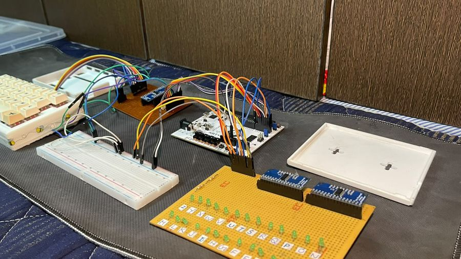

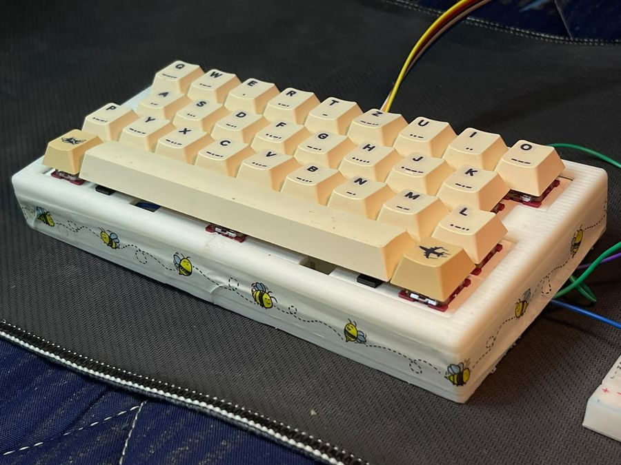

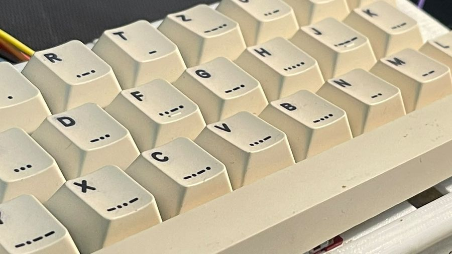

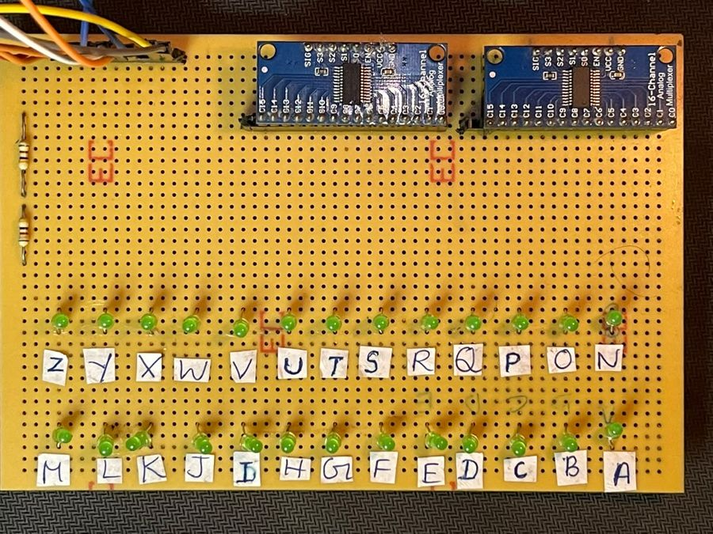

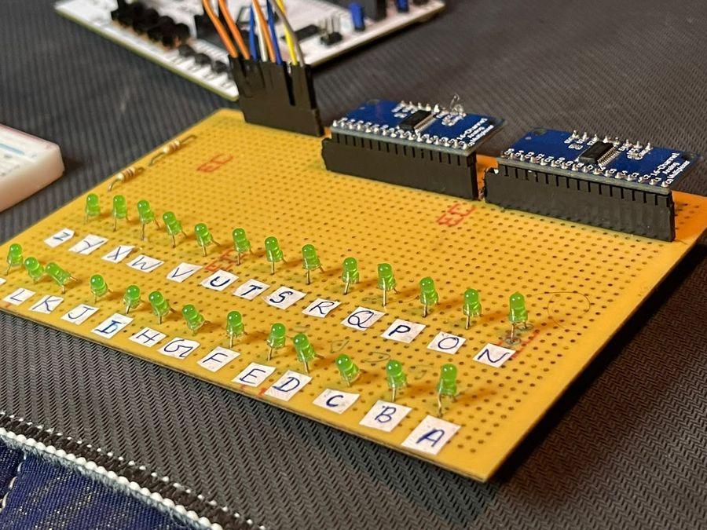

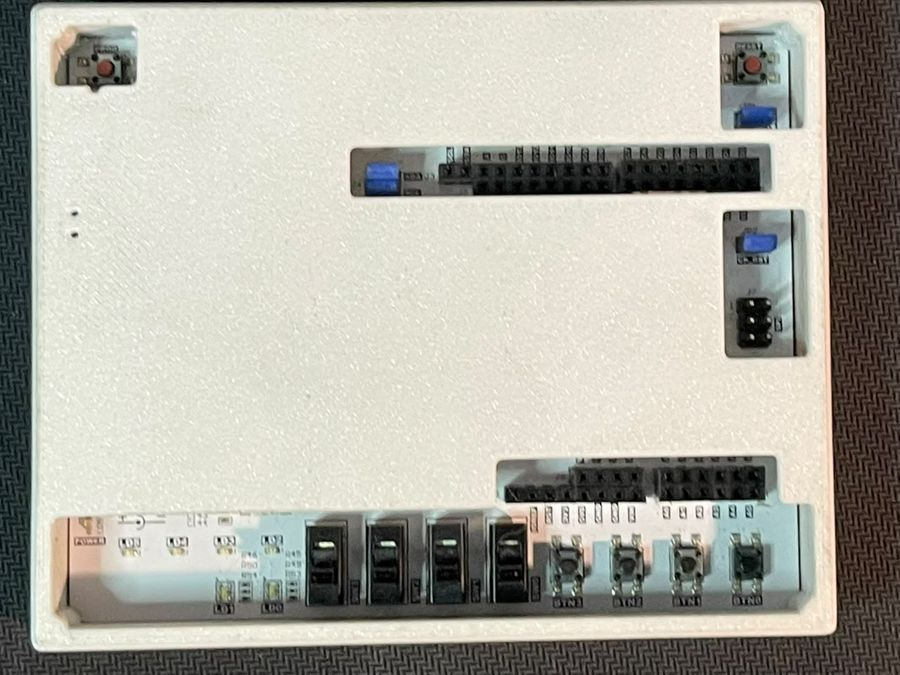
The circuits, drawn in KiCad
Both boards are simple. The keyboard is a diode matrix read through one CD74HC4067 multiplexer, and the lampboard is two of the same multiplexers, one per bank of lamps.

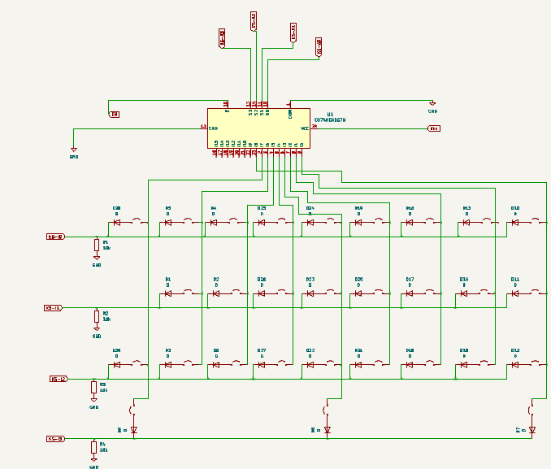

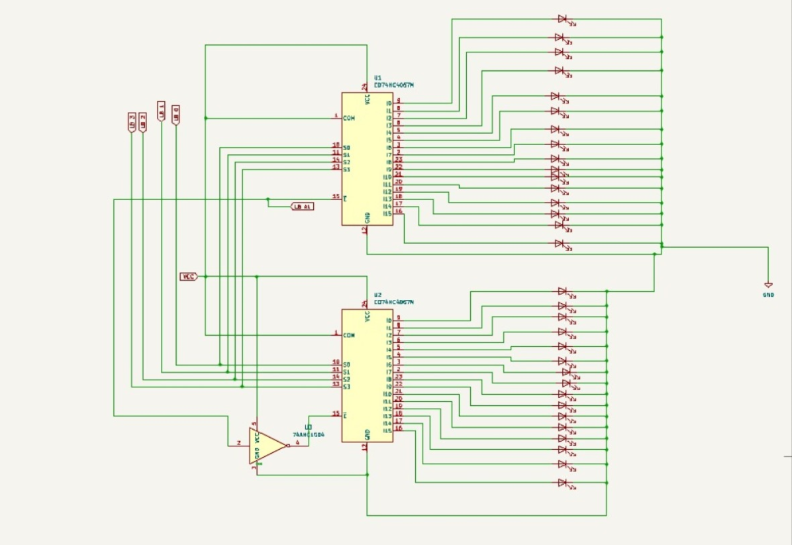
Schematics are from the team slides. The KiCad files are in the schematic folder.
The keyboard case, designed in CAD
The keyboard case was modelled in Onshape and 3D printed in separate parts that join in the middle. The top is tilted toward the user.

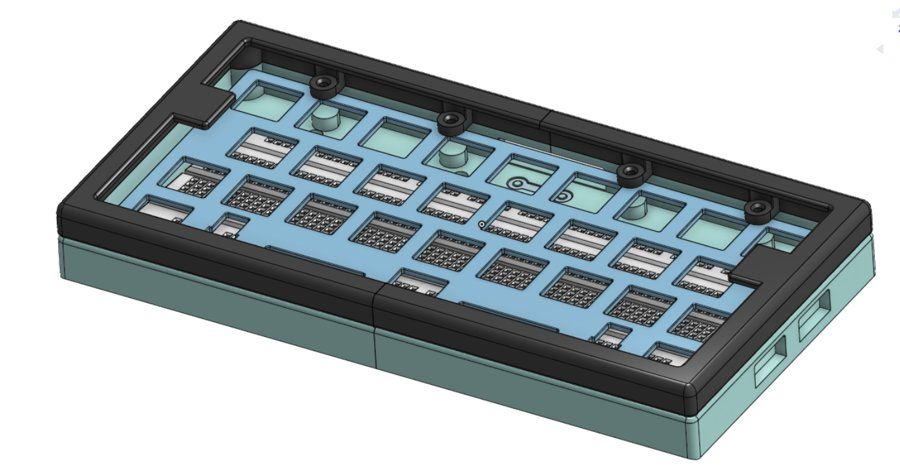

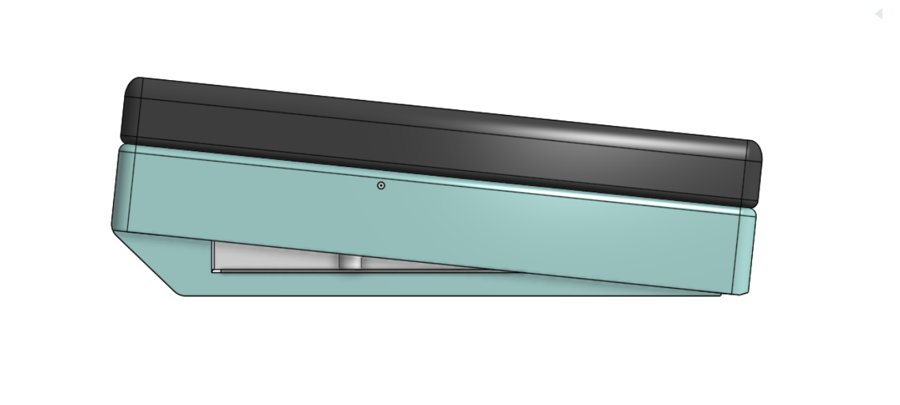

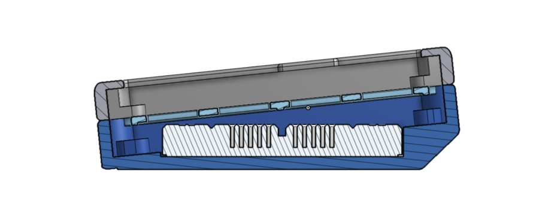
Where it stands
Keyboard, lampboard and cases built. Each key lit its own lamp on the real board.
Cipher rebuilt and verified in simulation. Synthesizes to 433 LUTs for the Spartan-7. Pin constraints checked against Digilent's file.
Tested on the real Arty S7 with the keyboard and lampboard, and it works. The owner reported the result; the per-stage table in the bring-up guide is still being filled in.
Morse-code output from the original design, a serial link to a PC, and entering plugboard settings from the keyboard.